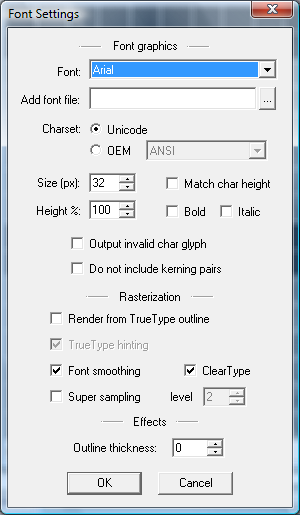

You can open the font settings dialog by going to the Options menu and choosing Font settings, or you can just press F on the keyboard.
This dialog controls the properties of the font, i.e. the character set, and looks.
These settings will let you choose the font face to use, and a few other options, such as whether the unicode or OEM character set is to be used.
The invalid character glyph is the glyph that is used by the font as fallback when there is no appropriate glyph in the TrueType font for a specific character.
The option to not include kerning pairs is useful when the application that will use the generated bitmap font doesn't support kerning pairs, or when the source TrueType font has incorrect kerning pairs.
The option to render from TrueType outline was added because the native font engine in Windows clips glyphs that go above or below the cell height. Normally this isn't a problem and in most cases you probably won't notice much difference between the two forms of rasterizing the glyphs.
TrueType hinting is something that makes the text more readable when rendered in small sizes by lining up the edges to the screen pixels. In the native font engine this is always turned on, but when rendering from the outline you have the option to turn this off, thus getting the exact forms of the characters. Be aware that for small fonts it might turn thin lines invisible thus making the glyphs unreadable.
ClearType is an option that the native font engine provides which takes advantage of the LCD/LED screens' pixel layouts to use subpixel smoothing. When rasterizing the glyphs to the texture the subpixel smoothing is lost, but it can still give a nice antialiasing effect so this option is made available to be used as desired.
When fonts are generated with font smoothing it is recommended that only font smoothing is used. If super sampling is used the resulting font may loose a bit of its sharpness due to averaging when down sampling. This is especially noticeable when small fonts are generated. Supersampling may be useful for raster fonts where font smoothing doesn't work.
The fonts can optionally be generated with a baked-in outline of variable width. If outline is used the font will take up a bit more texture space, but on the other hand the outline doesn't have to be generated at run-time when drawing the text.